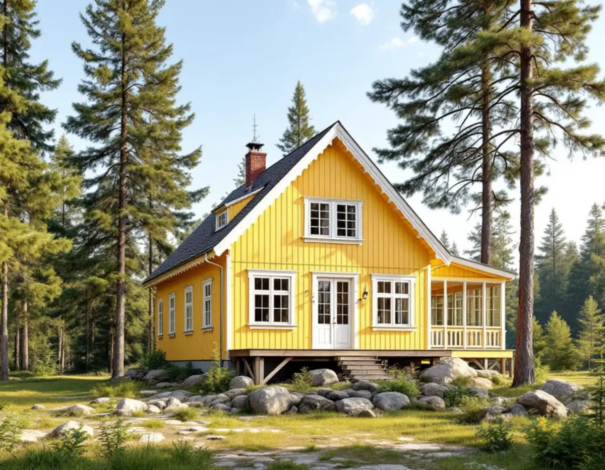
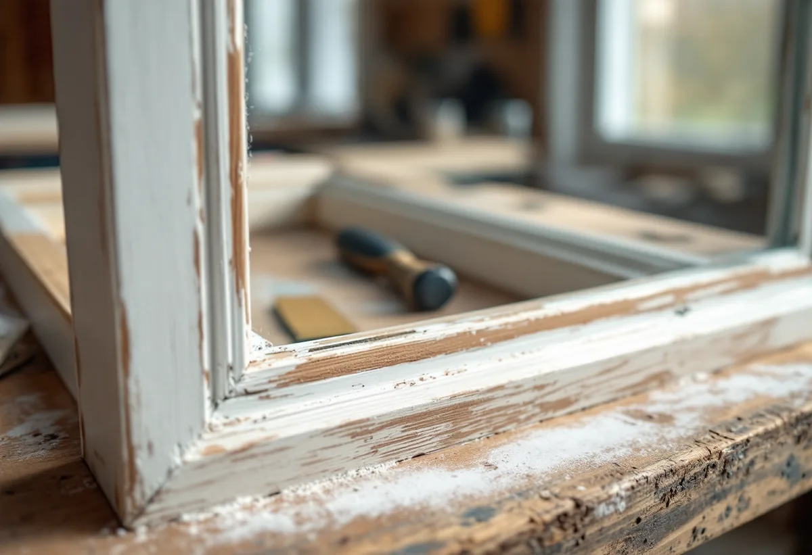
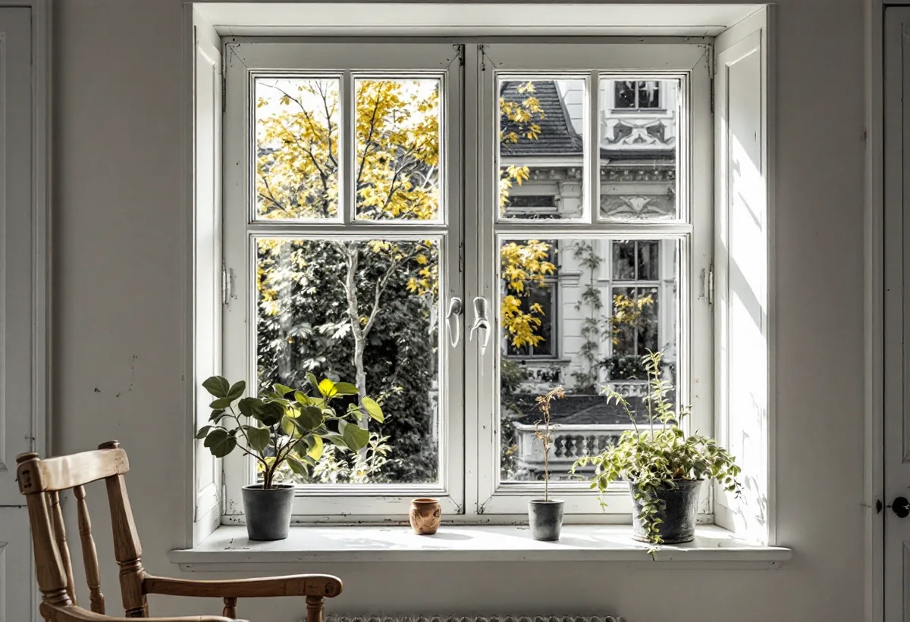

Platsbesök
Gratis genomgång av varje fönster.

I december 2024 antog Lidingö ett nytt kulturmiljöprogram, och många villaägare har sedan dess upptäckt att huset ligger i ett utpekat område.
Beskriv jobbet kort.
Något blev fel. Kontrollera uppgifterna eller ring 08 12 410 276.
Vi tittar på jobbet på plats innan du får offert.
Du ser vad som ingår och vad det kostar.
Vi drar av ROT direkt och sköter ansökan.
Geal Entreprenad AB, Bromma. Org.nr 559303-7566.

Där är det ofta både enklast och klokast att renovera de fönster huset redan har. Geal Entreprenad AB renoverar fönster på Lidingö – lagar trä, kittar om, målar och kompletterar med tätning – så att fönstren ser ut som förut.
Lidingö stad berättar att hela ön har inventerats och att kommunfullmäktige antog det nya kulturmiljöprogrammet den 16 december 2024. Det ersätter programmet från 1990. Vissa kvarter har tagits bort eftersom de förlorat de egenskaper som gjorde dem värdefulla, och nya områden har lagts till. Programmet har två delar: en handbok för fastighetsägare med allmänna råd om underhåll, och en del som beskriver bebyggelsehistorien och varje utpekat område.
Bland de utpekade områdena finns Lidingö villastad, Breviks villastad, Herseruds villastad, Mölna radhusby, Dalakolonin, Grönstakolonin och Stureplatån. Om ditt hus ligger inom ett av dem ser du i stadens webbkarta. Staden skriver också att det finns äldre inventeringar av enskilda byggnader från 1970- och 1980-talen och från 2013–2015, och att du kan be om att få ta del av beskrivningen av din fastighet.

Lidingö stad räknar det som en fasadändring att ändra fönster och dörrar. Du behöver bygglov om fastigheten ligger inom ett kulturhistoriskt värdefullt område eller om byggnaden i sig är kulturhistoriskt värdefull. Staden skriver samtidigt att programmet är ett kunskapsunderlag som inte är juridiskt bindande, men att det används som stöd vid bygglov.
En renovering som behåller fönstrens material, indelning och kulör ändrar inte det yttre utseendet. Därför är den vägen ofta den enklaste i ett utpekat område. Är du osäker kan du söka frivilligt bygglov, som enligt staden ger dig ett beslut på att det du planerar uppfyller lagens krav. Vill du ändå byta fönster finns fönsterbyte på Lidingö.
Riksantikvarieämbetets skrift om fönster beskriver underhållet som i första hand ommålning och omkittning. Sol och väta bryter ner och lakar ur färg och kitt på fönstrens mest utsatta delar, och temperaturväxlingar och sprickor i träet gör att färgen flagnar och kittet lossnar. Framför allt sydfasaderna är utsatta.
Skriften konstaterar att det främst är bottenstyckena i karm och båge som skadas, och att det oftast går att byta bara de skadade partierna. Ibland måste en båge nytillverkas. Vi tar loss bågarna, skrapar och lagar, byter rötskadat trä, kittar om och målar, och tillverkar en ny båge efter den gamla bara när den inte går att rädda.
Riksantikvarieämbetet skriver att ett äldre fönster kan behöva kompletteras med tätningslister eller en innerbåge för att möta dagens krav på energi och ljud. Det är åtgärder som syns inifrån men inte från gatan, och som därför passar bra i ett hus som ska behålla sitt yttre.
Programmets handbok beskriver hur man underhåller och förvaltar särskilt värdefulla byggnader, och staden påpekar att alla fastigheter inom ett utpekat område bör hanteras varsamt eftersom åtgärder på en tomt påverkar hur hela området upplevs. Mer om tjänsten finns under fönsterbyte och fönsterrenovering.
Gratis genomgång av varje fönster.
Vi ser om huset ligger i ett utpekat område.
Bågarna tas loss och märks.
Skrapning, nytt trä där det behövs, omkittning.
Grundning och målning i husets kulör.
Justering, tätningslist och beslag.
För en villa eller ett radhus räknar Skatteverket det som rotarbete att reparera fönster och att måla fönster. Är huset yngre än fem år får arbetet bara återställa det ursprungliga skicket. Det är bara arbetad tid på plats hos dig som ger avdrag, inte arbete i en verkstad.
Avdraget är högst 30 procent av arbetskostnaden och högst 50 000 kronor per person och år. Material och resor ger inget avdrag, och Geal drar avdraget direkt på fakturan.
Antal bågar och hur skadade de är, hur mycket kitt och färg som ska bort, om nytt trä eller nya bågar behövs, glas, beslag och tätningslist, och hur många fönster som går att laga på plats. Efter ett gratis platsbesök får du ett skriftligt kostnadsförslag.
Byta eller renovera fönster.
Fönsterbyte i Stockholm →Takbyte, takbesiktning och plåtarbeten.
Takläggare på Lidingö →Brevik, Mölna och Käppala.
Takrenovering på Lidingö →Potten, avloppet och kulturmiljöerna.
Attefallshus på Lidingö →Värdefulla hus, kulör och bidrag.
Fasadmålning på Lidingö →Villastäderna och Brevik på Lidingö.
Fönsterbyte på Lidingö →Villastad, källarbadrum och gästhus.
Badrumsrenovering på Lidingö →Villastäder, radhusbyar och berg.
Byggföretag på Lidingö →Radhus, villor och putsfasader på Lidingö.
Fasadrenovering på Lidingö →Souterrängvillor, radhus och äldre villor på Lidingö.
Golvläggare på Lidingö →Slipa och behandla trägolv i kök och hall.
Golvslipning på Lidingö →Villastäder, souterräng och radhusbyar.
Köksrenovering på Lidingö →Villastäder, radhusbyar och stugor på Lidingö.
Målare på Lidingö →Plåt i vind och värdefulla miljöer.
Plåtslagare på Lidingö →Verandor, trappor och dörrar.
Snickare på Lidingö →Nytt material, k-märkning och byggnadsminnen.
Takbyte på Lidingö →Ny tapet med hänsyn till huset.
Tapetsering på Lidingö →Webbkartan, programmet och frivilligt lov.
Tillbyggnad på Lidingö →Behåll stommen, bygg om resten.
Totalrenovering på Lidingö →Eller ring 08 12 410 276, mån–fre 08–17.
Beskriv jobbet kort.
Något blev fel. Kontrollera uppgifterna eller ring 08 12 410 276.